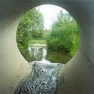

Дозвільні документи у сфері охорони водних ресурсів:
- Розробка документів та отримання Дозволу на спеціальне водокористування (підземні та поверхневі джерела водопостачання, скид зворотних вод у водний об`єкт)
Спеціальне водокористування здійснюється юридичними і фізичними особами насамперед для задоволення питних потреб населення, а також для господарсько-побутових, лікувальних, оздоровчих, сільськогосподарських, промислових, транспортних, енергетичних, рибогосподарських (у тому числі для цілей аквакультури) та інших державних і громадських потреб (ст. 48 Водного кодексу України).
Спеціальне водокористування може бути:
- короткотерміновим (до 3 років) - у разі скидання водокористувачем забруднюючих речовин у водні об'єкти в обсягах, що перевищують граничнодопустимі, які встановлюються органом виконавчої влади Автономної Республіки Крим з питань охорони навколишнього природного середовища, обласними, Київською та Севастопольською міськими держадміністраціями;
- довготерміновим (від 3 до 25 років) - в усіх інших випадках.
(Постанова КМУ №321 від 13.03.2002 р. «Про затвердження Порядку видачі дозволів на спеціальне водокористування та внесення змін до постанови Кабінету Міністрів України від 10 серпня 1992 р. N 459»).
- Розробка документів та отримання Спеціального дозволу на користування надрами
Дозволи надаються Держгеонадрами переможцям аукціонів з їх продажу та без проведення аукціонів у випадках, передбачених пунктом 8 цього Порядку, Держгеонадрами, крім корисних копалин місцевого значення на території Автономної Республіки Крим, дозволи на видобування яких надаються Радою міністрів Автономної Республіки Крим згідно із цим Порядком.
На кожний вид користування надрами в межах конкретної ділянки надається окремий дозвіл.
Дозвіл надається на строк, визначений заявником, але не більш як на:
- три роки - на геологічне вивчення ділянок надр корисних копалин місцевого значення;
- п'ять років - на геологічне вивчення родовищ корисних копалин і геологічне вивчення, в тому числі дослідно-промислову розробку родовищ корисних копалин загальнодержавного значення;
- 10 років - на геологічне вивчення нафтогазоносних надр, у тому числі дослідно-промислову розробку родовищ нафти і газу, в межах континентального шельфу та виключної (морської) економічної зони України;
- 20 років - на видобування корисних копалин;
- 30 років - на видобування нафти і газу в межах континентального шельфу та виключної (морської) економічної зони України;
- 20 років - на будівництво та експлуатацію підземних споруд, не пов'язаних з видобуванням корисних копалин;
- 50 років - на будівництво та експлуатацію підземних сховищ нафти чи газу;
Дозвіл на створення геологічних територій та об'єктів, що мають важливе наукове, культурне, санітарно-оздоровче значення (наукові полігони, геологічні заповідники, заказники, пам'ятки природи, лікувальні та оздоровчі заклади тощо), в частині їх геологічного вивчення і збереження надаються без обмеження строку дії.
- Розробка, погодження та затвердження Проекту нормативів гранично допустимих скидів (ГДС) речовин у водний об’єкт
Нормативи ГДС - граничні обсяги скидання зворотних вод - встановлюються для введених у дію народногосподарських об'єктів та тих, що проектуються чи споруджуються, згідно з вміщеним у додатку до цієї постанови переліком забруднюючих речовин, скидання яких у поверхневі та морські води водного фонду України, включаючи природні водойми (озера), водотоки (річки, струмки), штучні водойми (водосховища, ставки), канали, внутрішні морські води, нормується.
Водокористувач відповідає за наявність затверджених нормативів ГДС та надання розробнику достовірних вихідних даних, що одержуються на основі проведення інвентаризації показників складу та властивостей зворотних вод згідно з наведеними переліками забруднюючих речовин, скидання яких нормується та ідентифікація яких у зворотних водах є обов'язковою, обсягу витрат зворотних вод та інших необхідних для розрахунків даних.
Термін дії нормативів ГДС у кожному конкретному випадку встановлюється органами, уповноваженими видавати дозвіл на спеціальне водокористування, індивідуально залежно від терміну дії дозволу на спеціальне водокористування (Постанова КМУ №1100 від 11.09.1996 р. «Про Порядок розроблення і затвердження нормативів гранично допустимого скидання забруднюючих речовин та перелік забруднюючих речовин, скидання яких нормується»).
- Розробка та погодження Технологічних нормативів використання води
Для оцінки та забезпечення раціонального використання води у галузях економіки встановлюються технологічні нормативи використання води, а саме:
- поточні технологічні нормативи використання води - для існуючого рівня технологій;
- перспективні технологічні нормативи використання води - з урахуванням досягнень на рівні передових світових технологій.
Технологічні нормативи використання води розробляються та затверджуються відповідними центральними органами виконавчої влади за погодженням з центральним органом виконавчої влади, що забезпечує формування державної політики у сфері охорони навколишнього природного середовища (ст. 40 Водного кодексу України).
- Розробка технічного паспорту свердловин
Паспорт свердловини — документ, в якому зафіксовано основні геологічні, технічні і технологічні відомості про свердловину: призначення, дата початку і кінця буріння, положення і глибина вибою, конструкція,альтитуда гирла, ротора, колонного фланця, геологічний розріз, абсолютні відмітки продуктивних пластів, дати і інтервали їх перфорації, дані експлуатації свердловини, відомості про різні випробування, ускладнення в процесі буріння і експлуатації, про роботи з їхньої ліквідації та капітальні і поточні ремонти.
Свердловина без технічного паспорта вважається неіснуючої, а її експлуатація являється неправомірною та протизаконною.

.jpg)
.jpg)
.jpg)